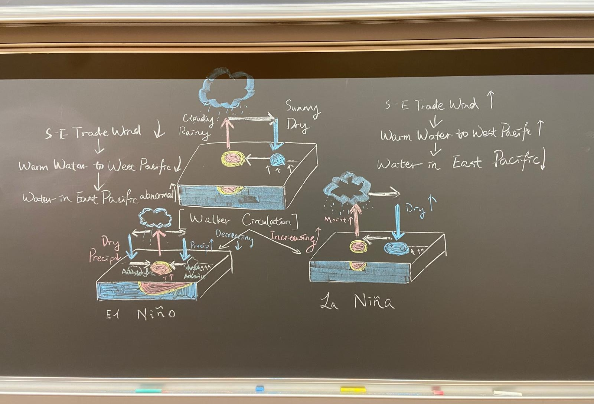

Lecture 8 – Waves
Internal Gravity Waves
Rotation effects will only be important for long waves with low frequencies – so we can assume outright that these are shallow water waves, even in the open ocean. These waves have the same dynamics as shallow-water surface gravity waves, with the addition of the Coriolis force: $$ \frac{\partial u}{\partial t} - fv = -g \frac{\partial \eta}{\partial x} $$ $$ \frac{\partial v}{\partial t} + fu = -g \frac{\partial \eta}{\partial y} $$ Rotating surface gravity waves are called Poincare waves or inertia-gravity waves. Away from land boundaries, the tide propagates as an inertia-gravity wave.
(A shallow layer of fluid rotating and of constant density.
Credit: Pedlosky, 2003.)
Take \(x\) to be in the direction of propagation of the wave (which is not changed by
rotation) and \(y\) in the horizontal direction perpendicular to the direction of propagation.
The sea surface elevation has the same cosine function as for non-rotating waves, but
water parcel motions are modified by rotation. Again, we are working on very large horizontal scales (in order for rotation to be
important), so vertical velocity is negligible. Water parcel motions are nearly horizontal.

import numpy as np
import matplotlib.pyplot as plt
import matplotlib.ticker as mticker
import cartopy.crs as ccrs
import cartopy.feature as cfeature
from cartopy.mpl.gridliner import LONGITUDE_FORMATTER, LATITUDE_FORMATTER
import imageio
import os
style_color = '#d6ebff'
plt.rcParams.update({
'text.color': style_color,
'axes.labelcolor': style_color,
'xtick.color': style_color,
'ytick.color': style_color,
'axes.edgecolor': style_color,
'axes.facecolor': 'none',
'savefig.transparent': True,
})
nt = 60 * 24 * 3
dt = 60
lon0 = 288.9
lat0 = 42.4
u0 = 20
v0 = 0
d2r = np.pi / 180
omega = 7.292E-5
re = 6.371E6
xold = yold = 0.0
uold = u0
vold = v0
lonold = lon0
latold = lat0
x_all = np.zeros(nt + 1)
y_all = np.zeros(nt + 1)
lon_all = np.zeros(nt + 1)
lat_all = np.zeros(nt + 1)
u_all = np.zeros(nt + 1)
v_all = np.zeros(nt + 1)
x_all[0], y_all[0], lon_all[0], lat_all[0], u_all[0], v_all[0] = xold, yold, lonold, latold, uold, vold
# Analytic solution
t_all = np.arange(0, nt * dt, dt)
f0 = 2 * omega * np.sin(lat0 * d2r)
x_lytic_all = u0 * np.sin(f0 * t_all) / f0 - v0 * np.cos(f0 * t_all) / f0 + v0 / f0
y_lytic_all = v0 * np.sin(f0 * t_all) / f0 + u0 * np.cos(f0 * t_all) / f0 - u0 / f0
lon_lytic_all = lon0 + x_lytic_all * np.cos(lat0 * d2r) * 360 / (2 * np.pi * re)
lat_lytic_all = lat0 + y_lytic_all * 360 / (2 * np.pi * re)
# First time step
x = xold + dt * uold
y = yold + dt * vold
f = 2 * omega * np.sin(latold * d2r)
u = uold + dt * f * vold
v = vold - dt * f * uold
lat = latold + (y - yold) * 360 / (2 * np.pi * re)
lon = lonold + (x - xold) * np.cos(lat * d2r) * 360 / (2 * np.pi * re)
x_all[1], y_all[1], lon_all[1], lat_all[1], u_all[1], v_all[1] = x, y, lon, lat, u, v
for it in range(2, nt + 1):
xnew = xold + 2 * dt * u
ynew = yold + 2 * dt * v
f = 2 * omega * np.sin(lat * d2r)
unew = uold + 2 * dt * f * v
vnew = vold - 2 * dt * f * u
lonnew = lonold + (xnew - xold) * np.cos(lat * d2r) * 360 / (2 * np.pi * re)
latnew = latold + (ynew - yold) * 360 / (2 * np.pi * re)
xold, yold, uold, vold, lonold, latold = x, y, u, v, lon, lat
x, y, u, v, lon, lat = xnew, ynew, unew, vnew, lonnew, latnew
x_all[it], y_all[it], lon_all[it], lat_all[it], u_all[it], v_all[it] = x, y, lon, lat, u, v
# Map extents
fudge = 1E-2
lon1 = int(lon0) - 5
lon2 = int(lon0) + 5
lat1 = int(lat0) - 5
lat2 = int(lat0) + 5
dlon = (lon2 - lon1) / 5
dlat = (lat2 - lat1) / 5
def custom_gridlines(ax):
gl = ax.gridlines(draw_labels=True, color=style_color, linestyle='--')
gl.xlabels_top = gl.ylabels_right = False
gl.xformatter = LONGITUDE_FORMATTER
gl.yformatter = LATITUDE_FORMATTER
gl.xlocator = mticker.FixedLocator(np.arange(lon1-360, lon2+dlon-360, dlon))
gl.ylocator = mticker.FixedLocator(np.arange(lat1, lat2 + dlat, dlat))
return gl
# Trajectory Plot
plt.figure(1)
ax = plt.axes(projection=ccrs.PlateCarree())
ax.set_extent([lon1 - fudge, lon2 + fudge, lat1 - fudge, lat2 + fudge])
ax.coastlines('50m', color=style_color, linewidth=0.8)
ax.add_feature(cfeature.BORDERS, linewidth=0.5, edgecolor=style_color)
custom_gridlines(ax)
plt.plot(lon_all, lat_all, '-', transform=ccrs.PlateCarree(), color=style_color)
plt.plot(lon_all[-1], lat_all[-1], 'o', color=style_color, transform=ccrs.PlateCarree())
plt.title('Trajectory', color=style_color)
# Static Kinetic Energy
plt.figure(2, facecolor='none')
plt.ylim([199.75, 200.25])
plt.plot((u_all**2 + v_all**2) / 2, color=style_color)
plt.title('Kinetic Energy', color=style_color)
plt.figure(3)
ax = plt.axes(projection=ccrs.PlateCarree())
ax.set_extent([lon1 - fudge, lon2 + fudge, lat1 - fudge, lat2 + fudge])
ax.coastlines('50m', color=style_color, linewidth=0.8)
ax.add_feature(cfeature.BORDERS, linewidth=0.5, edgecolor=style_color)
custom_gridlines(ax)
plt.plot(lon_lytic_all, lat_lytic_all, '-', color='red', transform=ccrs.PlateCarree())
plt.plot(lon_all, lat_all, '-', color=style_color, transform=ccrs.PlateCarree())
plt.plot(lon_all[-1], lat_all[-1], 'o', color=style_color, transform=ccrs.PlateCarree())
plt.title('Trajectory (Comparison)', color=style_color)
# Animation
images = []
filenames = []
nframe = 90
mydir = '.'
for iframe in range(nframe + 1):
it = int(iframe * (nt - 1) / nframe) + 1
plt.figure(figsize=plt.figaspect(0.5), facecolor='none')
ax = plt.axes(projection=ccrs.PlateCarree())
ax.set_extent([lon1 - fudge, lon2 + fudge, lat1 - fudge, lat2 + fudge])
ax.coastlines('50m', color=style_color, linewidth=0.8)
ax.add_feature(cfeature.BORDERS, linewidth=0.5, edgecolor=style_color)
custom_gridlines(ax)
# Highlight analytic solution
plt.plot(lon_lytic_all, lat_lytic_all, '-', color='midnightblue', transform=ccrs.PlateCarree())
# Actual trajectory up to current step
plt.plot(lon_all[0:it], lat_all[0:it], '-', color=style_color, transform=ccrs.PlateCarree())
plt.plot(lon_all[it], lat_all[it], 'o', color=style_color, transform=ccrs.PlateCarree())
plt.title('Trajectory', color=style_color)
filename = os.path.join(mydir, f'temp{iframe:04d}.png')
plt.savefig(filename, bbox_inches='tight', dpi=300, transparent=True)
images.append(imageio.imread(filename))
filenames.append(filename)
plt.close()
# Save the infinite replaying GIF
imageio.mimsave(os.path.join(mydir, 'InertialOscillations.gif'), images, loop=0)
Dispersion Relation
A dispersion relation relates the wavelength or wavenumber \(k\) of a wave to its frequency \(\omega\).- For waves in which the phase speed varies with k, the various sinusoidal components of a disturbance originating at a given location are at a later time found in different places. Such waves are dispersive.
- For nondispersive waves, their phase speeds are independent of the wave number
Internal Waves in Continuous Stratification
The dispersion relation for internal waves in a continuously stratified ocean is: $$ \omega^2 = N^2 \cos^2 \varphi $$ One immediate consequence of this expression is that internal waves have frequencies less than $N$. Let’s look at two extreme limits of this dispersion relationship.- Let the wave number vector be horizontal: $$ \lim_{\phi \to 0^\circ} \omega^2 = N^2 \cos^2 \phi = N^2 $$ This corresponds to nearly vertical oscillations of water parcels, where internal waves resemble buoyancy oscillations.
- Let the wave number vector be nearly vertical: $$ \lim_{\phi \to 90^\circ} \omega^2 = N^2 \cos^2 \phi = 0 $$ The restoring force on purely horizontal water parcel displacements is the Coriolis force alone and internal waves in this limit approach inertial oscillations. In this limit, the frequency of internal waves approaches the inertial frequency $f$, due to the Coriolis force dominating the restoring mechanism: $$ \omega \to f $$
- For low frequency, the response will be in beams that extend at a low angle away from the source with respect to the horizontal
- For higher frequencies, the beams of energy point more and more vertically

(Phase configurations of internal gravity waves.
Source is at centre and rays spread out in X-formation with (a) $\omega/N = 0.318$, (b) $\omega/N = 0.900$. Full lines represent troughs and dashed lines represent crests with propagation across the rays; (c) shows the relations between group velocity $\mathbf{C}_g$ and phase velocity direction $\mathbf{k}$.
Credit: Pond, S. and Pickard, G.L. (1983) Introductory Dynamical Oceanography.)
This can be understood in terms of the
direction of energy propagation relative to the frequency. Note that in the limit that the
source oscillates at very high frequency (higher than N), the response would not
propagate.
Kelvin Waves
The Kelvin wave is a unidirectional coastally trapped wave such that the amplitude of the wave decreases exponentially away from the coastline, f acing the direction of the phase velocity. The Kelvin wave always travels with the wall (coast) on its right side in the Northern Hemisphere.
(Northern hemisphere Kelvin waves on opposite sides
of a channel that is wide compared with the Rossby radius. In each
vertical plane parallel to the coast, the currents (shown by arrows)
are entirely within the plane and are exactly the same as those for a
long gravity wave in a nonrotating channel. However, the surface
elevation varies exponentially with distance from the coast in order
to give a geostrophic balance. This means Kelvin waves move with
the coast on their right in the Northern Hemisphere and on their left
in the Southern Hemisphere.
Credit: Mortimer, 1977.)
We work in a rotating shallow-water system, assuming constant mean depth $H$, gravity $g$, and Coriolis parameter $f$. The variables are:
- $u(x, y, t)$: zonal velocity
- $v(x, y, t)$: meridional velocity
- $\eta(x, y, t)$: free surface displacement
- Phase speed $c = \frac{\omega}{k} = \sqrt{g H}$
- Group speed $c_g = \frac{d\omega}{dk} = \sqrt{g H}$
Rossby Waves
Rossby waves are large-scale, low-frequency waves influenced by the variation of the Coriolis force with latitude (the β-effect). They are dispersive, westward-propagating, and essential for explaining oceanic and atmospheric responses to slow, large-scale forcing like climate change. Since Rossby waves are very slow, we assume periods longer than weeks: $$ \frac{1}{T} \ll f \quad \Rightarrow \quad \frac{\partial u}{\partial t} \approx 0, \quad \frac{\partial v}{\partial t} \approx 0 \quad \text{(drop them)} $$ For Rossby waves, the local acceleration terms are negligible compared to the Coriolis and pressure gradient forces.Define Rossby deformation radius: $$L_D = \frac{\sqrt{gH}}{f_0}$$ Then: $$ \omega = -\beta \frac{gk}{H f_0^2} = -\beta \frac{k}{f_0^2} \frac{g}{H} = -\beta L_D^2 k $$ So final dispersion relation is: $$ \boxed{\omega = -\beta L_D^2 k} \quad \text{or} \quad \boxed{c = \frac{\omega}{k} = -\beta L_D^2} $$ Rossby waves are dispersive waves whose phase speeds increase rapidly with increasing wavelength. This negative phase speed shows Rossby waves propagate westward (always).
β Effect
Consider a closed chain of fluid parcels initially aligned along a circle of latitude at time $t_0$, with no initial relative vorticity: $$ \zeta_{t_0} = 0 $$ Then, the entire chain is displaced meridionally by a small amount $\delta y$ at time $t_1$. We assume the absolute vorticity is conserved for each fluid parcel: $$ (\zeta + f)_{t_1} = f_{t_0} $$ Substituting $\zeta_{t_0} = 0$: $$ \zeta_{t_1} = f_{t_0} - f_{t_1} $$ Using Taylor expansion of the Coriolis parameter, the $\delta y$ is the meridional displacement (northward is positive): $$ f_{t_1} = f_{t_0} + \frac{df}{dy} \, \delta y = f_{t_0} + \beta \, \delta y $$ So the relative vorticity at $t_1$ becomes: $$ \boxed{\zeta_{t_1} = -\beta \, \delta y} $$ The $\beta$ effect induces vorticity \[ \left\{ \begin{aligned} &\zeta_{t_1} = -\beta \, \delta y < 0 && \text{(northward displacement: } \delta y > 0\text{)} \\ &\zeta_{t_1} = -\beta \, \delta y > 0 && \text{(southward displacement: } \delta y < 0\text{)} \end{aligned} \right. \]- This perturbation vorticity field will induce a meridional velocity field, which advects the chain of fluid parcels southward west of the vorticity maximum and northward west of the vorticity minimum.
- The fluid parcels oscillate back and forth about their equilibrium latitude, and the pattern of vorticity maxima and minima propagates to the west.
Waves in the Atmosphere and Oceans
| Wave Classification | |
|---|---|
|
Restoring Force Conservation of potential temperature in the presence of positive static stability ⇒ internal gravity waves Conservation of potential vorticity in the presence of a mean gradient of potential vorticity ⇒ Rossby waves |
|
|
Types of Waves External gravity wave (Shallow-water gravity wave) Internal gravity (buoyancy) wave Inertial-gravity wave: Gravity waves that have a large enough wavelength to be affected by the earth’s rotation. Rossby Wave: Wavy motions result from the conservation of potential vorticity. Kelvin wave: It is a wave in the ocean or atmosphere that balances the Coriolis force against a topographic boundary such as a coastline, or a waveguide such as the equator. Kelvin wave is non-dispersive. |
| Wave Type | Dispersive or Non-Dispersive | Details |
|---|---|---|
| Gravity Waves | Both |
Deep-water gravity waves are dispersive Shallow-water gravity waves are non-dispersive |
| Rossby Waves | Dispersive | Phase speed varies with wavelength |
| Kelvin Waves | Non-dispersive | Constant phase speed regardless of wavelength |
Breaking Wave
All of our discussion thus far has been based on a linear (small-amplitude) approximation of the full problem. Using this approximation, we have been able to explain many commonly observed properties of surface water waves. However, there is at least one familiar aspect of these waves that cannot be explained by linear theory: breaking, which is most commonly observed as waves run up a beach. A wave crest becomes unstable and starts breaking when the particle velocity exceeds the velocity of the wave crest (the wave celerity).(Steepening of a finite amplitude wave.
Credit: 12.333 | Spring 2004 | Undergraduate Atmospheric and Ocean Circulations, MIT OpenCourseWare.)
This happens for two reasons:
- As the waves run up the beach, the energy in the wave becomes focused into a shallower layer (once $D \leq k^{-1}$ or so), thus concentrating the energy and increasing the wave amplitude
- when $D \leq k^{-1}$ or so, the phase speed becomes dependent on depth, being greater where the water is deeper. In a finite amplitude wave, the water is deeper at the wave crest than in the wave trough. Hence the crests travel faster than the troughs; the crest therefore tend to catch up with and, eventually, overtake the troughs. This produces the overturning of the wave that is familiar in breakers.
(A stationary oblique breaking wave for laboratory testing of surfboards.
Credit: Hornung HG & Killen P 1976.)
Baroclinic Instability and the Eady Model
Baroclinic instability generates eddies/waves from a geostrophically balanced, vertically sheared flow. Because of the thermal wind relationship, the shear flow has horizontal buoyancy gradients, meaning that the height of isentropes varies from place to place. Thus potential energy is stored in the field and can be released by allowing these deviations to relax, lowering some of the dense fluid that's been raised and raising some of the lighter fluid that's been pushed down. We shall analyze this using the Boussinesq, quasi-geostrophic equations.Eddies
Large rotating masses of water called vortexes (vortexes = to turn), which are more commonly known as eddies or rings.For example, Meanders (Menderes = a river in Turkey that has a very sinuous course, snakelike bends) along the north boundary of the Gulf Stream pinch off and trap warm Sargasso Sea water in eddies that rotate clockwise, creating warm-core rings surrounded by cooler water.
Cold nearshore water spins off to the south of the Gulf Stream as counter-clockwise-rotating cold-core rings surrounded by warmer water.
(A schematic diagram of the Gulf Stream and sea surface temperatures.
As the Gulf Stream meanders northward, some of its meanders pinch off and form either warm-core or cold-core rings.
Credit: Essentials of Oceanography, Trujillo and Thurman.)
The cold rings consist of spinning cone-shaped masses of cold water that extend over 3.5 kilometers deep. These rings may exceed 500 kilometers in diameter at the surface. The diameter of the cone increases with depth and sometimes reaches all the way to the sea floor, where cones have a tremendous impact on sea floor sediment.
Cold rings move southwest at speeds of 3 to 7 kilometers per day toward Cape Hatteras, where they often rejoin the Gulf Stream.
(In winter, the mixed layer becomes thicker because of cooling of the ocean surface (left). On the other hand the mixed layer depth is shallow in summer due to calm winds and stronger solar radiation (right).
Submesoscale structures become more active within the deeper mixed layer in winter (left), while becoming calmer in summer when the mixed layer is shallow (right).
Credit: Jamstec.)
Storms
In class we discussed that in the most simple way we can think of the Jetstream as a vertically sheared flow on a rotating disc. An analysis of the potential vorticity equation then showed that any perturbation on this background flow will have to obey: \[ \phi_{zz} - \frac{N^2 k^2}{f^2} \phi = 0 \] the boundary conditions being no normal flow at the bottom (i.e., the ground) and top of the atmosphere (with fixed height \( D \)).$\because \phi(x, z, t) = B \sinh\left( \alpha(z - D/2) \right) e^{i(kx + ly - \omega t)} \text{ with } \alpha = \frac{N k}{f}$
$\because e^{-i\omega t} = e^{-i k c t}, \quad \text{where} \quad c = \frac{\omega}{k}$
$\therefore \text{Let } c = c_r + i c_i\quad \text{(real part + imaginary part)}$
$ e^{-i k c t} = e^{-i k c_r t} \cdot e^{k c_i t}$
$\therefore \begin{cases} c_i > 0 & \Rightarrow \text{Instability (perturbation grows)} \\ c_i < 0 & \Rightarrow \text{Stability (perturbation decays)} \\ c_i = 0 & \Rightarrow \text{Neutral (pure oscillation)} \end{cases} $
Ocean Tides
(The atmosphere and solid Earth also experience tides — just dig a hole here and take a note for later.)In a nutshell, ocean tides refer to the periodic motion of seawater caused by tidal forces exerted by astronomical object (mainly the Sun and the Moon). By convention, the vertical rise and fall of sea level is called the tide, while the horizontal motion is referred to as the tidal current.
In 1687, the physicist Isaac Newton proposed the law of universal gravitation. Following this, the equilibrium theory of the tide (also known as static tide theory) was developed. This theory assumes that the Earth's surface is entirely covered by a layer of ocean with uniform depth, and that the seawater has no inertia.
Regarding tidal force, it is often confused with gravitational force. In fact, the tidal force is the resultant of the gravitational force from a astronomical object and the inertial centrifugal force associated with the Earth's orbital motion around that body.
For the whole year, the sun is in the middle and the earth revolves around the sun. One circle is one year. The moon revolves around the earth once and returns to roughly the same relative position, which takes about one month. The earth's equatorial plane has an angle of intersection with the white plane of the moon orbiting the earth, and the ecliptic plane of the earth orbiting the sun also has an angle. Therefore, in addition to the equator, tides in other places on the earth also occur. The phenomenon varies from day to day. This is the equilibrium tide theory, which was mainly proposed by Newton.
(The M 2 (semidiurnal) barotropic tidal constituent in the oceans of the world, based on Topex-Poseidon satellite altimeter data. The amplitude of the surface elevation in centimeters is indicated by the color bar scale. Note the high-amplitude locations (red-yellow) in certain parts of the continental margins of the world. The white lines, which are cotidal differing by 1 hr, represent lines of constant phase. Amphidromic points are spots where amplitude is zero and where phase lines merge.
The curved arcs around the amphidromic points show the direction of the tides, each indicating a synchronized 6-hr period. See Egbert and Ray (2000) for further details.
Credit: Richard Ray, Space Geodesy branch, National Aeronautics and Space Administration-Goddard Space Flight Center.)
Above is a distribution map of the global tidal component (the main half-day tidal component of the lunar), and you can roughly understand the global tidal distribution.
The relative importance of the various processes affecting the evolution of waves in oceanic and coastal waters from Holthuijsen (2007)
| Process | Oceanic waters | Coastal waters | ||
|---|---|---|---|---|
| Shelf seas | Nearshore | Harbour | ||
| Wind generation | ●●● | ●●● | ● | ○ |
| Quadruplet wave–wave interactions | ●●● | ●●● | ● | ○ |
| White-capping | ●●● | ●●● | ● | ○ |
| Bottom friction | ○ | ●● | ●● | ○ |
| Current refraction / energy bunching | ○ / ● | ● | ●● | ○ |
| Bottom refraction / shoaling | ○ | ●● | ●●● | ●● |
| Breaking (depth-induced; surf) | ○ | ● | ●●● | ○ |
| Triad wave–wave interactions | ○ | ○ | ●● | ● |
| Reflection | ○ | ○ | ● / ●● | ●●● |
| Diffraction | ○ | ○ | ● | ●●● |
●●● = dominant, ●● = significant but not dominant, ● = of minor importance, ○ = negligible.
El Niño/La Niña
Pacific Decadal Oscillation (PDO)
Pacific decadal oscillation (PDO) is one of the dominant modes of sea surface temperature (SST) variability in the North Pacific, and it shifts phases on an inter-decadal time scale usually covering more than 10 years. When the PDO index is positive (negative), SSTs in the central part of the North Pacific are likely to be lower (higher) than their normals (i.e., typical SST anomalies in the positive phase of the PDO). In addition, when the index is positive (negative), sea level pressures (SLPs) values in the high latitudes of the North Pacific are likely to be lower (higher) than their normals. This indicates that the Aleutian Low is stronger (weaker) than its normal in winter and spring (typical SLP anomalies in the positive phase of the PDO).(The grids of SST and SLP data. Ten degree by five degree SLP averages are centered at grid intersections and SST averages are centered at crosses.
Credit: Davis, R.E. (1976) Predictability of sea surface temperature and sea level pressure anomalies over the North Pacific Ocean. J. Phys. Oceanogr.)
The PDO has positive and negative phases.
- Positive phases of the PDO tend to be associated with periods of more rapid global warming whilst cold PDO events have been linked to severe droughts spanning many years in south western USA, as well as increased rainfall over eastern Australia.
- It is thought that negative phases could be linked to times of slower warming. This is because cold phases of the PDO tend to increase mixing of colder, deep ocean waters with warmer surface waters. This temporarily reduces the rate of global warming caused by increasing greenhouse gas emissions. Positive phases have the opposite effect.